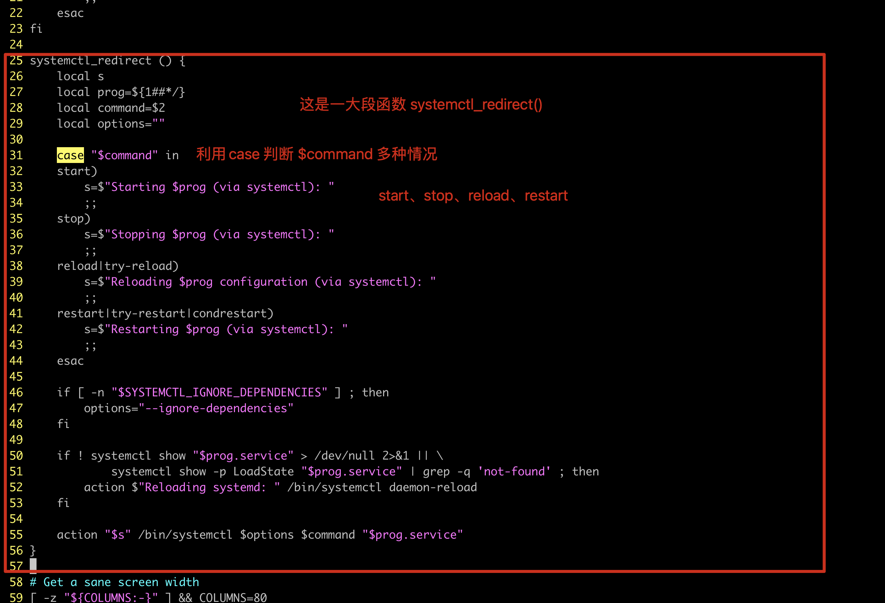

05-流程控制之case
1.case语句作用
case和if一样，都是用于处理多分支的条件判断
但是在条件较多的情况，if嵌套太多就不够简洁了
case语句就更简洁和规范了
2.case用法参考

常见用法就是如根据用户输入的参数来匹配，执行不同的操作。
最常见的就是如服务脚本的 {start|restart|stop|reload} 这样的操作判断
3.case基本语法
case $1 in
start)
command
;;
restart)
command
;;
stop)
command
;;
)*
command
;;
esac
4.if和case的区别实践
4.1 脚本需求
根据用户选择执行不同的操作
4.2 if写法
#!/bin/bash
echo -e "-------
1. 取钱
2. 存钱
3. 查余额
-----"
read -p "请输入你的操作：" num
if [ $num -eq 1 ];then
echo "取了5万"
elif [ $num -eq 2 ];then
echo "存了10万"
elif [ $num -eq 3 ];then
echo "余额还剩下60万"
else
echo "能不能长点心，按照要求输入？"
fi
4.3 case写法
- 明显的，if多条件判断，会存在重复性的代码，case简化了操作
- 而且还省去了出现if条件判断语法，导致的各种异常
#!/bin/bash
echo -e "-------
1. 取钱
2. 存钱
3. 查余额
-----"
read -p "请输入你的操作：" num
case $num in
1)
echo "取了5万"
;;
2)
echo "存了10万"
;;
3)
echo "余额还剩下60万"
;;
*)
echo "能不能长点心，按照要求输入？"
esac
5.使用case写出更健壮的计算器
需求（也是开发脚本的功能思路，在你很熟练语法之后，你看到这样的需求，心中应该理解想到，用哪些shell脚本的语法即可完成。）
1. 交互式接收用户输入的数字，计算符号
2. 判断用户输入的参数是否是3个
3. 判断用户输入的是否是纯数字整数
4. 判断用户输入的计算符号是否是 加减乘除
5. 如果用户输入错误，友好提示用户正确输入的语法
6. 如果输入错误，程序无须结束，循环重来让用户输入（循环知识点，以后做）
7. 重复性的代码，封装为函数（以后做）
代码
#!/bin/bash
# 数字1
read -p "请输入要计算的数字1：" num1
is_num=$(echo $num1 | sed -r "s#[0-9]+##g")
# 如果字符串非空，也就是并非纯数字
if [ ! -z $is_num ];then
echo "请输入纯数字整数！！"
exit
fi
# 数字2
read -p "请输入要计算的数字2：" num2
is_num=$(echo $num2 | sed -r "s#[0-9]+##g")
# 如果字符串非空，也就是并非纯数字
if [ ! -z $is_num ];then
echo "请输入纯数字整数！！"
exit
fi
echo -e "请选择运算符号：
1. +
2. -
3. *
4. /"
read -p "请输入您的符号选择：" sign
case $sign in
1)
echo "$num1 + $num2 = $(( $num1 + $num2 ))"
;;
2)
echo "$num1 - $num2 = $(( $num1 - $num2 ))"
;;
3)
echo "$num1 * $num2 = $(( $num1 * $num2 ))"
;;
4)
echo "$num1 / $num2 = $(( $num1 / $num2 ))"
;;
*)
echo "请您输入 1~4的选项。"
esac
6.开发非交互的服务启动脚本
# 需求，使用case开发非交互的服务管理脚本，添加颜色状态功能
# 具体开发思路，可以参考systemctl是如何帮你管理程序的即可。
# 这里的脚本，等于是管理nginx的脚本，一个服务单独一个脚本即可。
代码
#!/bin/bash
source /etc/init.d/functions
your_service=$1
case $your_service in
start)
echo "${your_service} 启动中"
sleep 1
nginx
if [ $? -eq 0 ];then
action "${your_service} 启动成功" /bin/true
else
action "${your_service} 启动失败" /bin/false
fi
;;
stop)
echo "${your_service} 停止中"
sleep 1
nginx -s stop
if [ $? -eq 0 ];then
action "${your_service} 以停止" /bin/true
else
action "${your_service} 停止报错！！" /bin/false
fi
;;
restart)
echo "${your_service} 重启中"
nginx -s stop
sleep 1
nginx
if [ $? -eq 0 ];then
action "nginx 重启成功" /bin/true
else
action "nginx 重启失败" /bin/false
fi
;;
reload)
nginx -s reload
if [ $? -eq 0 ];then
action "nginx正在重新加载" /bin/true
else
action "nginx 重新载入失败" /bin/false
fi
;;
check)
echo "检测 ${your_service} 语法中"
nginx -t
;;
status)
echo "检查 ${your_service} 运行状态中"
if [ ! -f "/run/nginx.pid" ];then
echo "nginx未运行！！"
else
echo "nginx运行中！进程id是$(cat /run/nginx.pid)"
fi
;;
*)
echo "用法错误，正确用法是：{start|stop|restart|reload|check}"
esac
7.日志分析多功能脚本
需求
# 按要求分析nginx的日志
# 打印功能选择菜单
1. 显示当前机器信息
2. 查询pv，uv
3. 显示访问量最高的ip，以及访问次数
4. 显示访问最频繁的业务url，最频繁的页面
5. 显示各种搜索引擎爬虫访问本站的次数
6. 显示都有哪些客户端访问了本网站
提示
nginx作为优秀的网站服务器，通过日志提取用户访问行为是最合适的了
pv，page view，表示页面浏览量，点击量，用户刷新一次，就是一个pv，也就是一个请求，一次页面浏览，因此只作为网站的一个总览访问总体访问量（基于请求方法字段提取pv）
uv ，表示unique visitor，指的是同一个客户端发出的请求，只被计算一次，基于去重后的客户端ip作为独立访客。（基于remote_addr提取 uv）
脚本
#!/bin/bash
echo -e "------------
------日志分析系统，功能菜单------
1. 显示当前机器信息
2. 查询pv，uv
3. 显示访问量最高的10个ip，以及访问次数
4. 显示访问最频繁的10个业务url，最频繁的页面
5. 显示各种搜索引擎爬虫访问本站的次数
6. 显示都有哪些客户端访问了本网站
-------------"
read -p "请输入您的选择：" num
case $num in
1)
echo -e "===========当前机器信息=======
服务器名：$(hostname)
服务器IP: $(hostname -I)
当前系统时间：$(date +%T-%F)
当前登录用户：$USER
=========="
;;
2)
echo -e "=========当前机器pv、uv统计数据======
pv页面访问总量：$(awk '{print $6}' y-awk-nginx.log | wc -l)
========================================================================
uv独立访客数量：$(awk '{print $1}' y-awk-nginx.log |sort |uniq -c |wc -l)
"
;;
3)
echo -e "=========访问量最高的10个IP，访问次数==============
$(awk '{print $1}' y-awk-nginx.log |sort |uniq -c |sort -n -r |head -10)"
;;
4)
echo -e "=======访问量最高的10个业务url，最频繁的页面=====
$(awk '{print $7}' y-awk-nginx.log | sort | uniq -c |sort -rn |head -10)"
;;
5)
echo -e "======显示各种搜索引擎爬虫访问本站的次数========
百度爬虫访问次数：$(grep -Ei 'baiduspider' y-awk-nginx.log |wc -l)
必应爬虫访问次数：$(grep -Ei 'bingbot' y-awk-nginx.log |wc -l)
谷歌爬虫访问次数：$(grep -Ei 'googlebot' y-awk-nginx.log |wc -l)
搜狗爬虫访问次数：$(grep -Ei 'sogou web spider*' y-awk-nginx.log |wc -l)
易搜爬虫访问次数：$( grep -Ei 'yisou' y-awk-nginx.log |wc -l)
"
;;
6)
echo -e "========访问本网站的客户端种前10种是：==============
$( awk '{print $12}' y-awk-nginx.log|sort |uniq -c |sort -rn |head -10)"
;;
*)
echo "请按要求输入选项！！！谢谢！"
;;
esac
8.阅读同事写脚本
在工作里，阅读公司现有的脚本是常事，学会添加注释，理解脚本作用，然后可以开始维护脚本，维护项目。
上班之后，一般的工作技巧是
- 阅读ansible配置文件，主机清单文件，roles或者playbook，整体了解公司运维部署架构
- 然后再一层层的细看，从ansible的剧本，拆解，每一个组件的细节，涉及的配置文件，shell脚本
- 然后再从细节，去理解配置文件的功能，shell的细节。
- 自己写好总结文档，学习笔记，可以随时拿出来看。
这里是于超老师从jumpserver最新版的github代码库下载一个sh脚本，如果现在你就是这家飞致云新入职员工，你就得去阅读，维护该堡垒机的所有发布脚本。
来，试着给如下脚本，加上注释，目标如下
1.学习生产环境下其他工程师写的脚本写法
2.阅读，加注释，理解他人的脚本。
#!/bin/bash
if grep -q 'source /opt/autoenv/activate.sh' ~/.bashrc; then
echo -e "\033[31m 正在自动载入 python 环境 \033[0m"
else
echo -e "\033[31m 不支持自动升级，请参考 http://docs.jumpserver.org/zh/docs/upgrade.html 手动升级 \033[0m"
exit 0
fi
source ~/.bashrc
cd `dirname $0`/ && cd .. && ./jms stop
jumpserver_backup=/tmp/jumpserver_backup$(date -d "today" +"%Y%m%d_%H%M%S")
mkdir -p $jumpserver_backup
cp -r ./* $jumpserver_backup
echo -e "\033[31m 是否需要备份Jumpserver数据库 \033[0m"
stty erase ^H
read -p "确认备份请按Y，否则按其他键跳过备份 " a
if [ "$a" == y -o "$a" == Y ];then
echo -e "\033[31m 正在备份数据库 \033[0m"
echo -e "\033[31m 请手动输入数据库信息 \033[0m"
read -p '请输入Jumpserver数据库ip:' DB_HOST
read -p '请输入Jumpserver数据库端口:' DB_PORT
read -p '请输入Jumpserver数据库名称:' DB_NAME
read -p '请输入有权限导出数据库的用户:' DB_USER
read -p '请输入该用户的密码:' DB_PASSWORD
mysqldump -h$DB_HOST -P$DB_PORT -u$DB_USER -p$DB_PASSWORD $DB_NAME > /$jumpserver_backup/$DB_NAME$(date -d "today" +"%Y%m%d_%H%M%S").sql || {
echo -e "\033[31m 备份数据库失败，请检查输入是否有误 \033[0m"
exit 1
}
echo -e "\033[31m 备份数据库完成 \033[0m"
else
echo -e "\033[31m 已取消备份数据库操作 \033[0m"
fi
git pull && pip install -r requirements/requirements.txt && cd utils && sh make_migrations.sh
cd .. && ./jms start all -d
echo -e "\033[31m 请检查jumpserver是否启动成功 \033[0m"
echo -e "\033[31m 备份文件存放于$jumpserver_backup目录 \033[0m"
stty erase ^?
exit 0